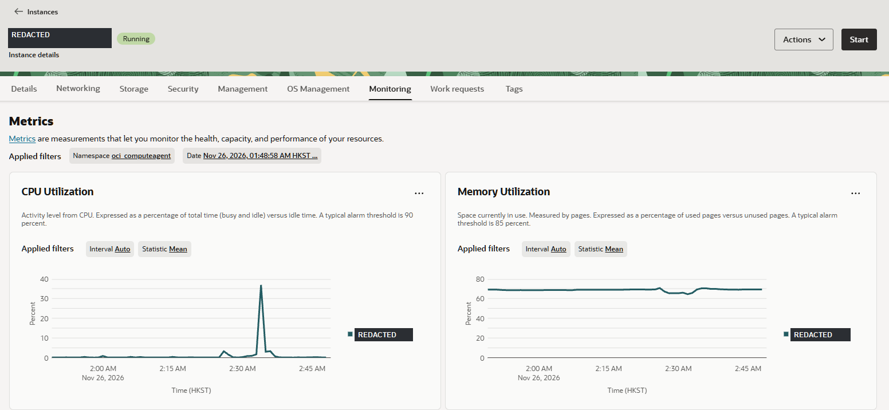

Linux compute host
The instance runs Canonical Ubuntu 20.04 LTS in Singapore.
CURRENT HOMELAB / CLOUD INFRASTRUCTURE
A personal cloud-hosted Ubuntu environment running the services behind my Discord bot, Pumpkin's Spy.
OVERVIEW
I use an Oracle Cloud Free Tier compute instance to run my Node.js Discord bot scripts independently of my personal PC. Docker provides an environment for the individual services, and each service contributes functionality to the same Pumpkin's Spy bot in our community.
The instance runs Canonical Ubuntu 20.04 LTS in Singapore.
Services use Docker images with their required Node.js runtimes and dependencies. The content scanner, Twitch estimator and Ragnarok notifier also include Docker Compose configurations.
I manage the instance from Windows Command Prompt using SSH key-based authentication.
I use the OCI console to review CPU, memory and disk I/O metrics and check the health of the compute environment.
ARCHITECTURE
HOSTED SERVICES
Daily community notifications sourced from GamerPower.
View serviceVirusTotal-assisted link and file analysis for moderators.
View serviceScheduled and manual estimates sourced from Twitch stream tags.
View serviceScheduled pre-event and ending reminders for Ragnarok New World.
View serviceINFRASTRUCTURE EVIDENCE

RESOURCE MONITORING

The dashboard helps me observe compute resource utilization over time while hosting my Discord bot services. This screenshot captures one monitoring period, not a long-term performance benchmark.
LEARNING OUTCOMES